Phần I: Xóa Bỏ Ngộ Nhận & Động Lực Học Đường Bay Của Bóng
1. Lời Mở Đầu: Tiếp Cận Quần Vợt Bằng Khoa Học Thực Chứng
Đối với những người đứng ngoài hàng rào nhìn vào, quần vợt trông có vẻ đơn giản đến ngây thơ. Không có bẫy cát như trong golf, không có những ngọn đồi tuyết hiểm trở, cũng chẳng có những hậu vệ khổng lồ sẵn sàng lao vào húc ngã bạn. Mặt sân trông rộng mênh mông và tấm lưới có vẻ rất thấp, khiến nhiều người mới bắt đầu dễ dàng thốt lên: "Môn này dễ như ăn kẹo."
Thế nhưng, bất kỳ ai đã từng cầm vợt bước vào sân thi đấu đều thấu hiểu sự khắc nghiệt tột cùng của nó. Bạn đối mặt với hàng loạt áp lực vô hình, những pha bóng biến hóa chớp nhoáng và sự ức chế khi liên tục đánh bóng hỏng mà không hiểu tại sao.
Mục tiêu của cuốn sách này là giúp bạn xử lý triệt để sự căng thẳng đó và đạt phong độ thi đấu đỉnh cao dưới mọi áp lực. Bằng cách áp dụng những nghiên cứu khoa học thực chứng về giải phẫu học, động lực học và tâm lý học hành vi, tôi muốn mang đến cho bạn một hệ thống kỹ thuật chuẩn xác, một niềm tin vững chắc vào các cú đánh của mình và một tư duy chiến lược thực tế không rườm rà.
2. Chương 1: Đập Tan Những Ngộ Nhận Phổ Biến & Các Nguyên Lý Cốt Lõi
Trong nhiều thập kỷ, nền huấn luyện quần vợt truyền thống đã bị chi phối bởi những giáo điều sai lầm truyền khẩu từ đời này sang đời khác.
Ngộ nhận 1: Ảo tưởng sân đấu khổng lồ và lưới thấp. Người chơi nghiệp dư nhìn sân đấu bằng con mắt tĩnh, nhưng khi quả bóng bay với vận tốc hơn một trăm kilomet một giờ, sân đấu bỗng chốc thu hẹp lại bằng một chiếc khăn tay và tấm lưới bỗng cao như một bức tường thành. Bạn phải hiểu rằng biên độ an toàn là cực kỳ quý giá.
Ngộ nhận 2: Ảo tưởng về những đường bóng sạt mép lưới (Net-Skimmers). Hàng ngàn huấn luyện viên bảo học trò phải đánh bóng bay sạt mép lưới chỉ vài centimet. Đây là lời khuyên tai hại nhất! Một cú đánh sát lưới chỉ cần một sai số nhỏ về góc tiếp xúc là sẽ rúc lưới ngay lập tức. Các tay vợt hàng đầu thế giới luôn đưa quả bóng bay cao hơn mép lưới từ sáu mươi centimet đến một mét, sau đó sử dụng độ xoáy cuộn để kéo bóng rơi an toàn vào sân.
Hai nguyên tắc căn bản bất biến của Vic Braden:
Thứ nhất, luôn giữ bóng sâu về cuối sân: bóng sâu đẩy đối thủ vào thế bị động và triệt tiêu mọi góc đánh nguy hiểm của họ.
Thứ hai, ép đối thủ chỉ có một phương án đánh trả: bằng cách dồn bóng vào góc yếu nhất của đối phương, bạn có thể đoán trước đường bóng tiếp theo của họ tới chín mươi phần trăm và sẵn sàng tung đòn dứt điểm.
3. Chương 2: Động Lực Học Đường Bay & Khí Động Học Của Độ Xoáy (Ball Dynamics)
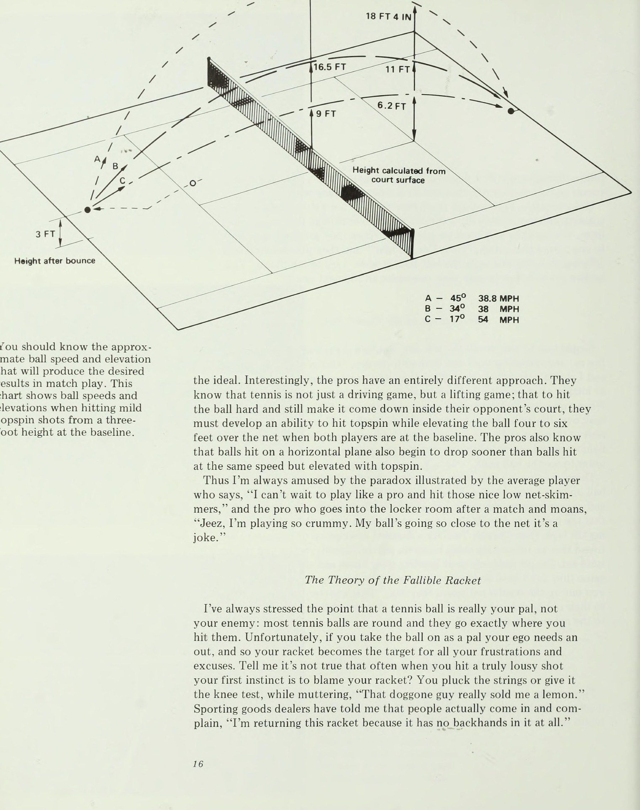
[English: Aerodynamics of Ball Rotation: Magnus Effect & Pressure Zones]
Mọi điều xảy ra với quả bóng trên không trung đều tuân theo các định luật vật lý bất biến:
Độ xoáy cuộn (Topspin): Khi quả bóng xoáy cuộn về phía trước, phần đỉnh của quả bóng di chuyển ngược chiều với dòng không khí, tạo ra vùng áp suất cao phía trên; trong khi phần đáy bóng tạo ra vùng áp suất thấp. Theo nguyên lý Bernoulli và hiệu ứng Magnus, lực khí động học sẽ đè quả bóng rơi cắm nhanh xuống mặt sân. Càng đánh mạnh với xoáy topspin, quả bóng càng cắm sâu an toàn vào sân.
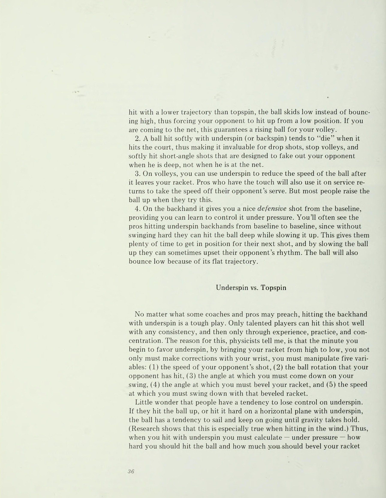
[English: Trajectory Dynamics: Topspin Dive vs. Underspin Float]
Độ xoáy ngược (Underspin hay Slice): Trái ngược với topspin, quả bóng cắt xoáy ngược tạo ra lực nâng khí động học, khiến bóng bay lượn lờ trên không trung lâu hơn và nảy trượt là là mặt sân. Tuy nhiên, underspin cực kỳ nguy hiểm khi bạn cố gắng đánh mạnh, vì lực nâng sẽ dễ dàng đẩy quả bóng bay vọt ra ngoài đường biên cuối sân.
Độ xoáy ngang (Sidespin): Giúp bóng bay lượn vòng theo hình cánh cung sang hai bên, thường được áp dụng trong những cú giao bóng xoáy lát hiểm hóc để đẩy đối thủ ra khỏi hành lang sân.
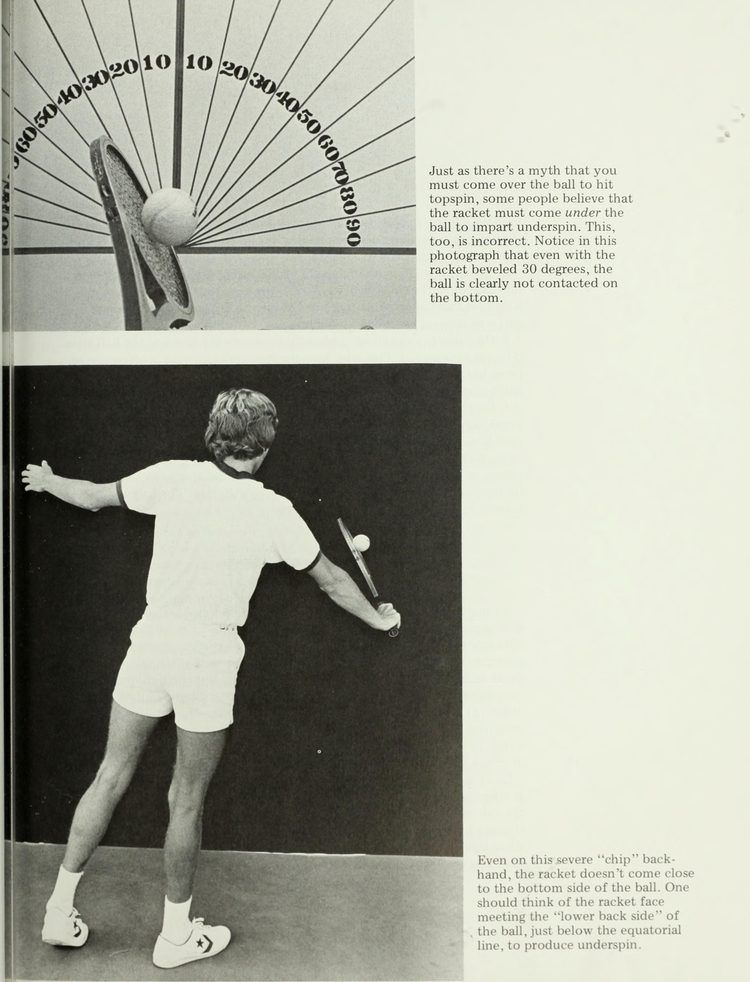
Phần II: Cách Mạng Cú Vung Hình Vòng Cung & Cú Trái Tay Đòn Bẩy
4. Chương 3: Cú Thuận Tay Hiện Đại & Phát Minh Cú Vung Hình Vòng Cung (The Loop Swing)
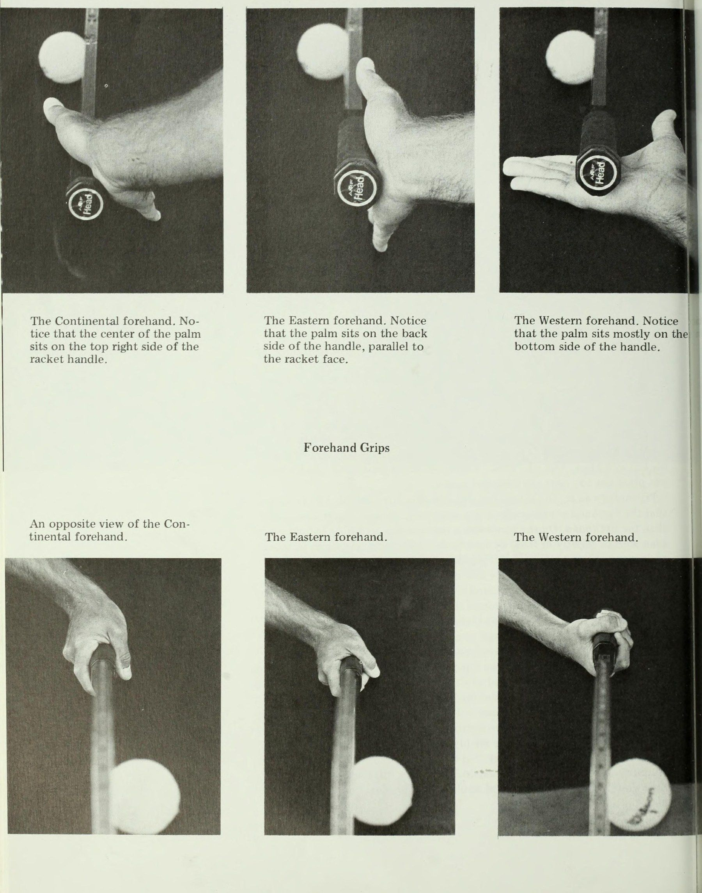
[English: Biomechanical Analysis: Eastern, Continental & Western Grips]
Một trong những đóng góp mang tính cách mạng nhất của tôi cho nền quần vợt hiện đại là việc khẳng định sự vượt trội tuyệt đối của cú vung vợt hình vòng cung (Loop Swing) so với kỹ thuật kéo thẳng vợt ra sau (Straight Back) truyền thống.
Những người bảo thủ thường bao biện rằng việc kéo thẳng vợt ra sau dễ dạy hơn cho người mới chơi. Nhưng trên thực tế, khi bước vào thi đấu thực chiến, gần như một trăm phần trăm các tay vợt chuyên nghiệp hàng đầu thế giới đều sử dụng cú loop swing.
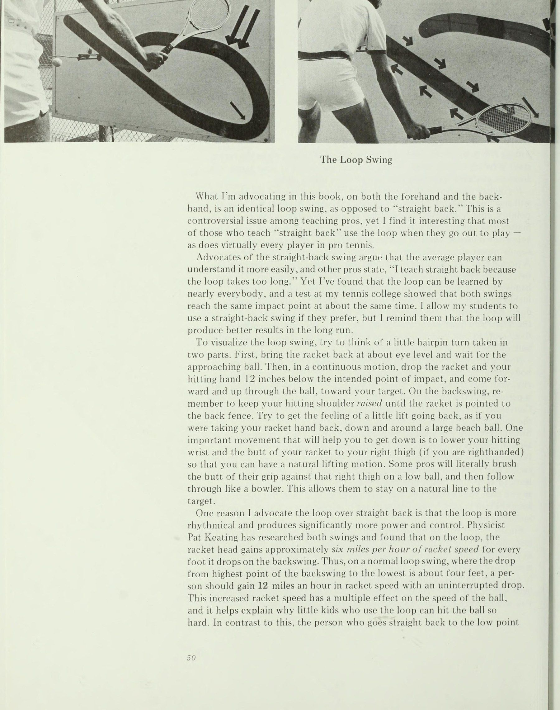
[English: The Continuous Loop Swing: Fluid Acceleration vs. Straight Back]
Nghiên cứu của nhà vật lý học Pat Keating tại Học viện Quần vợt của tôi đã chứng minh bằng số liệu chính xác:
Cứ mỗi foot (khoảng ba mươi centimet) mà đầu vợt rơi tự do trong chuyển động mở vợt ra sau, cây vợt sẽ tự động gia tăng xấp xỉ sáu dặm một giờ (gần mười kilomet một giờ) tốc độ đầu vợt nhờ trọng lực mà không đòi hỏi bất kỳ sự gắng sức nào từ cơ bắp.
Trong một cú loop swing chuẩn mực, khi đầu vợt rơi một khoảng bốn feet từ điểm cao nhất xuống điểm thấp nhất, người chơi sẽ thu được thêm tới mười hai dặm một giờ tốc độ vung vợt miễn phí! Điều này giải thích tại sao những đứa trẻ có thân hình nhỏ nhắn nhưng thuần thục cú loop swing lại có thể đánh ra những đường bóng sấm sét không thua kém người lớn.
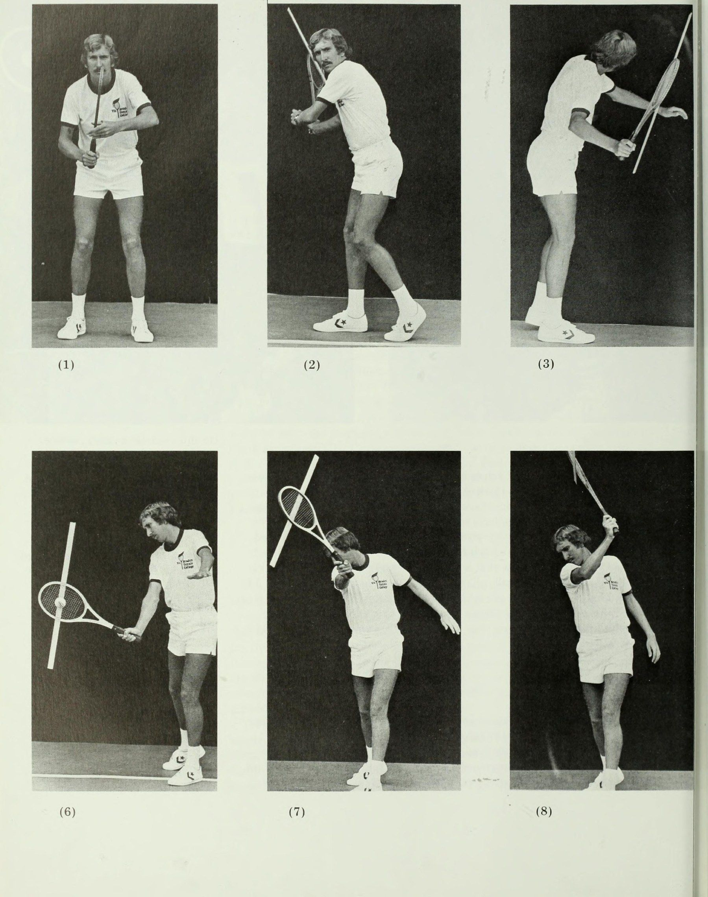
[English: Vertical Lift Mechanics: Driving from Legs Through Contact]
Chuỗi động tác thực hiện: đưa tay cầm vợt ra sau ngang tầm mắt, sau đó trong một chuyển động liên tục và êm ái, hạ đầu vợt rơi tự do xuống thấp hơn Điểm tiếp xúc bóng dự kiến ba mươi centimet, hạ thấp đầu gối và vung vút lên trên đón bóng ở phía trước thân người.
5. Chương 4: Cú Trái Tay Đòn Bẩy Mở Rộng & Khái Niệm Đánh Từ Trong Ra Ngoài
Rất nhiều người chơi gặp bế tắc với cú trái tay (backhand) vì họ cố gắng "đẩy" quả bóng bằng cánh tay thay vì sử dụng toàn bộ hệ thống đòn bẩy của cơ thể.
Bí quyết để làm chủ cú trái tay bao gồm ba mắt xích cốt lõi:
Thứ nhất, "chiến đấu để hạ thấp trọng tâm" (Fighting to Get Low). Bạn không thể thực hiện một cú trái tay topspin uy lực nếu đứng thẳng lưng như một chiếc cột cờ. Bạn phải gập sâu hai đầu gối, hạ thấp hông để đầu vợt có thể rơi xuống sâu bên dưới quả bóng trước khi phóng lên.
Thứ hai, căn nhịp rơi đầu vợt. Hãy kiên nhẫn chờ quả bóng nảy lên rồi mới thả đầu vợt xuống điểm thấp nhất, tạo đà nâng bóng mượt mà.
Thứ ba, khái niệm đánh từ trong ra ngoài (The Inside-Out Concept). Khi vung vợt tấn công, hãy hình dung bạn đang đưa cây vợt từ sát thân mình vung chéo ra ngoài hướng mục tiêu. Chuyển động này giúp cánh tay mở rộng biên độ tối đa từ khớp vai, giải phóng hoàn toàn sức mạnh của các nhóm cơ lưng lớn và tạo ra một đường bóng cắm sâu đầy uy lực vào phần sân đối diện.
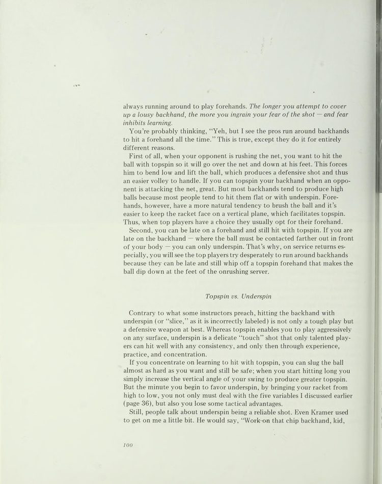
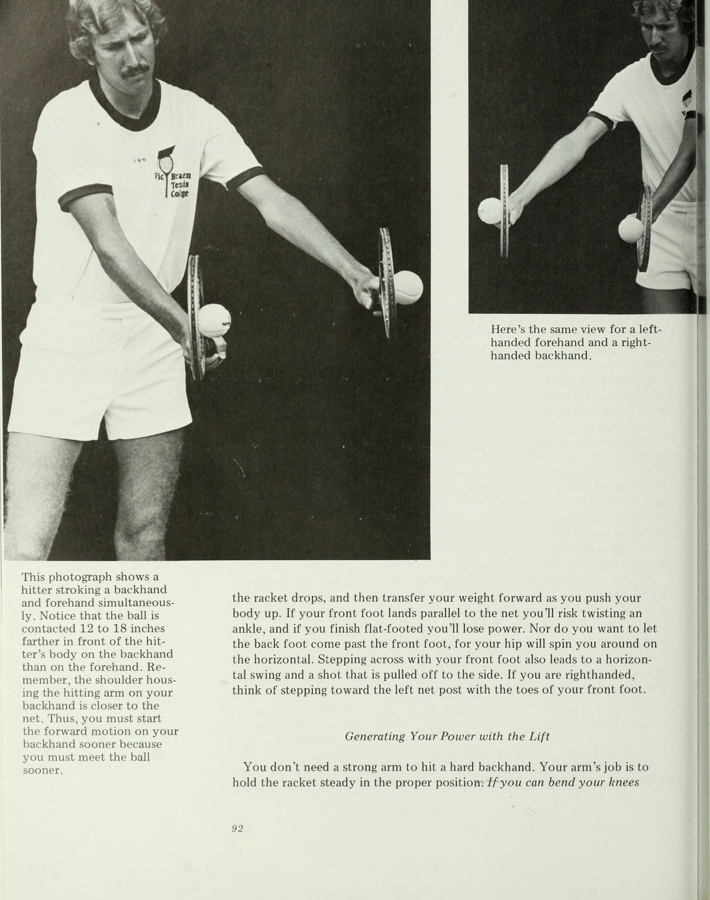
Phần III: Chiến Thuật Trên Lưới & Cơ Học Cú Giao Bóng Sấm Sét
6. Chương 5: Làm Chủ Không Gian Trên Lưới — Cú Vô-Lê Đột Phá & Đập Bóng Tấn Công
Rất nhiều huấn luyện viên cổ điển thường dạy học viên phải "bước vào và vung vợt chém xuống" khi đánh vô-lê (volley). Nghiên cứu phim quay chậm ba chiều tại phòng thí nghiệm của chúng tôi đã vạch trần sai lầm nghiêm trọng này.
Khi đứng cách lưới từ hai đến ba mét, thời gian phản xạ của bạn trước một đường bóng bay với tốc độ tám mươi dặm một giờ chỉ là một phần tư giây. Nếu bạn mở vợt ra sau quá xa, bạn chắc chắn sẽ tiếp xúc bóng muộn ở phía sau thân người và đẩy bóng bay vọt ra ngoài sân.
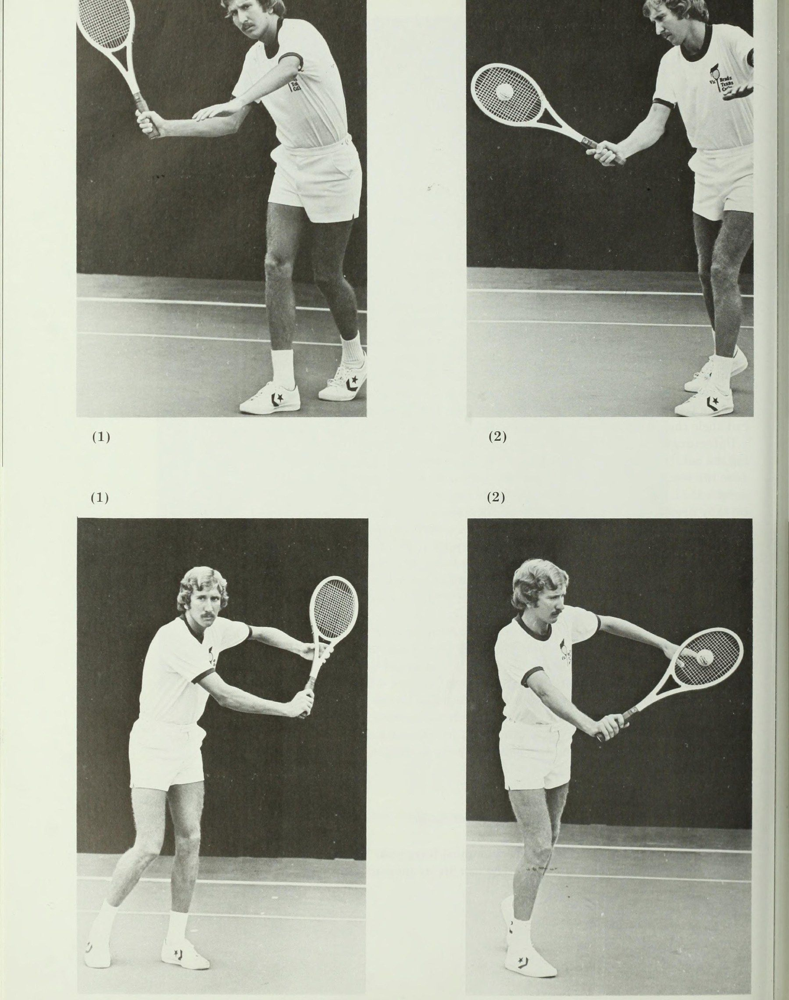
[English: Compact Punch Volley: Elimination of Backswing & Forward Meeting]
Nguyên tắc cốt tử của cú vô-lê hiện đại là: "Không mở vợt ra sau, chỉ chặn và đấm bóng" (Catch and Punch). Mặt vợt luôn phải hiện diện trong tầm nhìn ngoại vi của bạn trước khi tiếp xúc bóng.
Cú chạm bóng vô-lê thực chất là việc sử dụng mặt vợt vững chắc như một bức tường bê tông góc nghiêng nhẹ, biến toàn bộ động năng của đường bóng đối phương thành cú phản công hiểm hóc.
Đối với cú demi-volley (cú đánh nửa nảy ngay khi bóng vừa chạm đất): hãy gập sâu hai khớp gối, giữ thân trên thẳng đứng, đặt đầu vợt sát mặt đất và nâng nhẹ quả bóng qua mép lưới.
Đối với cú smash (đập bóng trên không): hãy xoay nghiêng người ngay khi đối phương lốp bóng, chỉ tay không cầm vợt lên trời để căn tầm nhìn và đập bóng tại điểm cao nhất với toàn bộ sự dứt khoát.
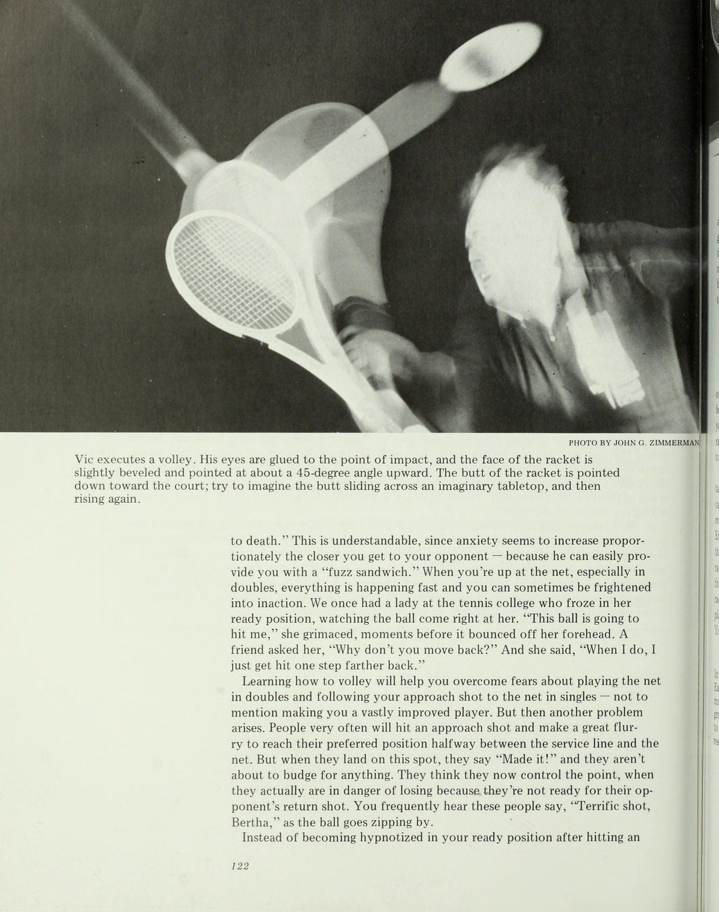
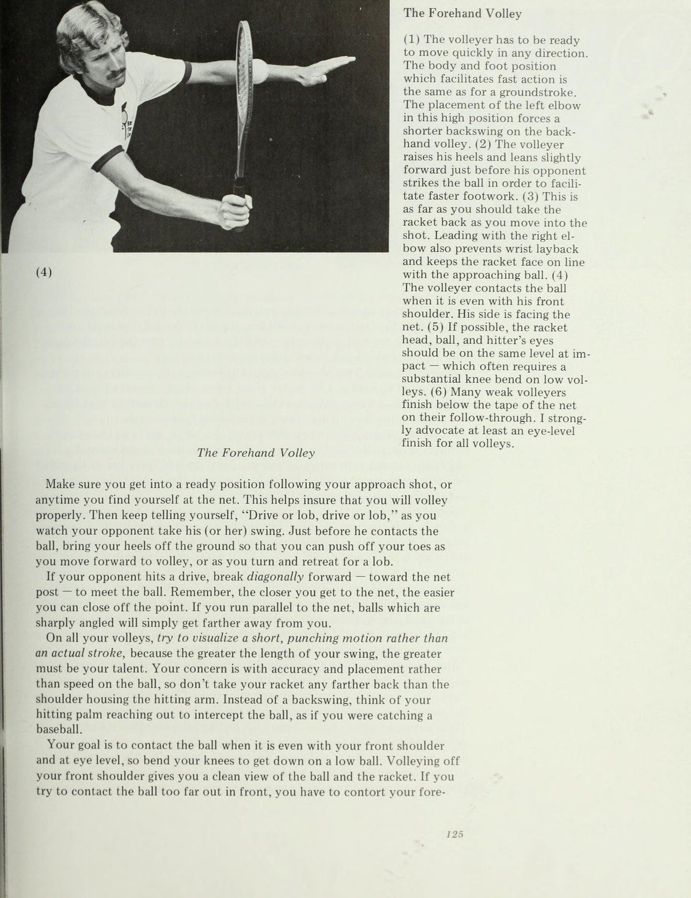
7. Chương 6: Cú Giao Bóng Uy Lực — Phát Hiện Chấn Động Về Cơ Học Xoay Sấp (Pronation)
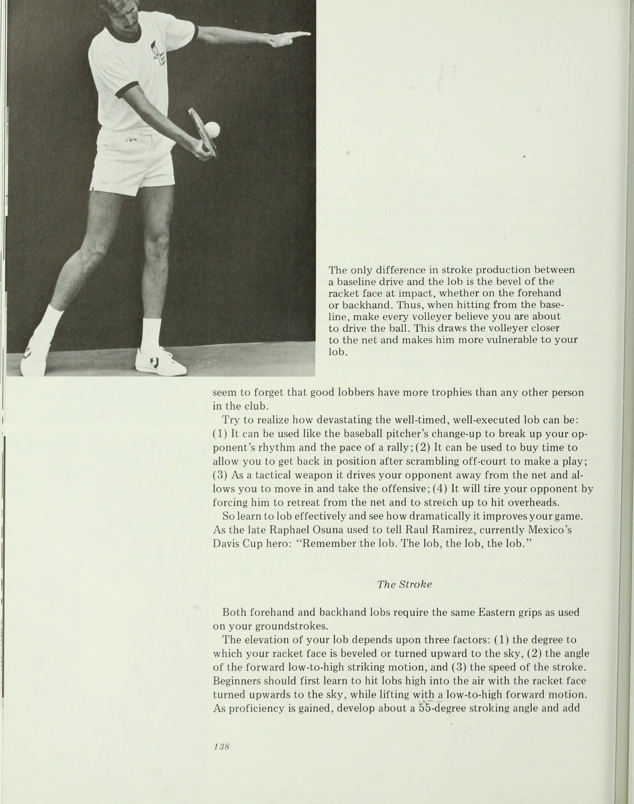
[English: The Kinetic Serve Chain: Baseball Throw Motion & Consistent Toss]
Cú giao bóng (serve) là vũ khí tấn công tối thượng trong môn quần vợt vì đó là cú đánh duy nhất bạn hoàn toàn kiểm soát quả bóng mà không bị tác động bởi đối thủ.
Trong suốt nhiều thập kỷ, thế giới quần vợt lầm tưởng rằng lực giao bóng khủng khiếp của các nhà vô địch đến từ cú Động tác sấp cổ tay / xoay trong cẳng tay chủ động (Wrist Snap). Chúng tôi đã gắn các cảm biến chuyển động góc và quay phim tốc độ hai trăm khung hình một giây đối với các tay vợt giao bóng mạnh nhất thế giới.
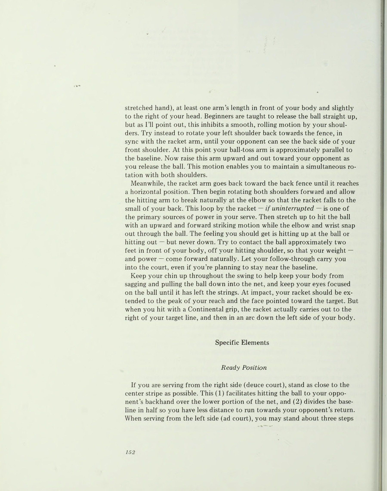
[English: Forearm Pronation Mechanics & American Twist Spin Physics]
Kết quả thật kinh ngạc: cổ tay của người chơi thực chất không hề chủ động gập xuống theo chiều trước-sau. Yếu tố tạo ra tốc độ đầu vợt vượt ngưỡng một trăm dặm một giờ chính là chuyển động xoay sấp cẳng tay (Forearm Pronation) từ trong ra ngoài quanh trục xương cẳng tay.
Chuyển động này giống hệt động tác của một vận động viên ném bóng chày chuyên nghiệp:
Bước một, tung bóng kiên định hơi chếch về phía trước góc một giờ, vươn cao tay không thuận để dẫn hướng cơ thể.
Bước hai, hạ đầu vợt rơi mượt mà xuống sau lưng trong tư thế gãi lưng (Scratch the Back), uốn cong cung lưng và tích lũy đàn hồi từ chân và hông.
Bước ba, bật vươn người lên cao đón bóng ở điểm cao nhất của tầm với, đồng thời giải phóng cẳng tay xoay sấp mãnh liệt để mặt vợt áp sát vào bóng tạo gia tốc cực đại.
Chúng tôi phân loại ba kiểu giao bóng thiết yếu: cú giao bóng phẳng (Flat Serve) xé toạc góc chữ T, cú giao bóng xoáy ngang (Slice Serve) cuộn bóng trượt rộng ra mang sân, và cú American Twist (Kick Serve) nảy vọt vồng qua vai trái đối thủ.
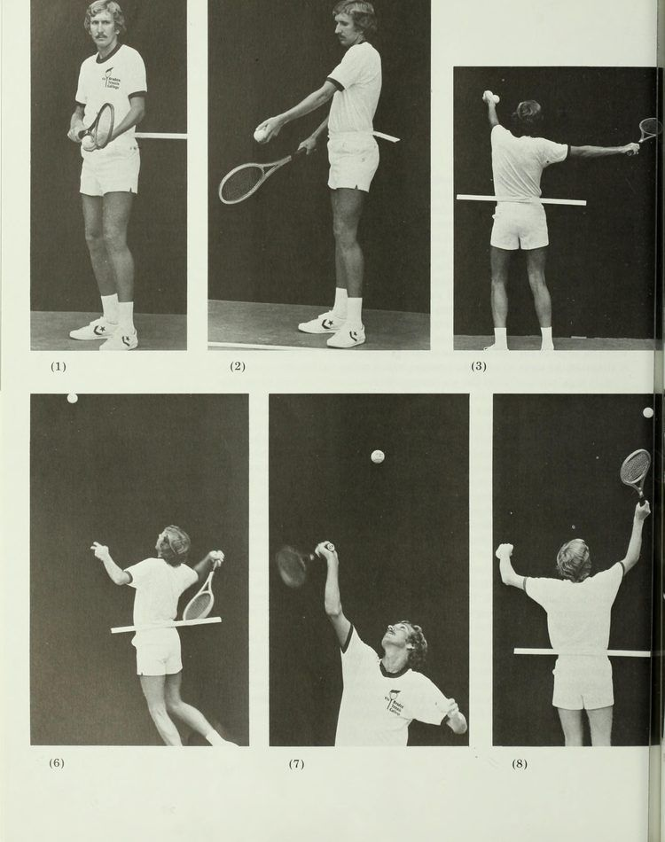
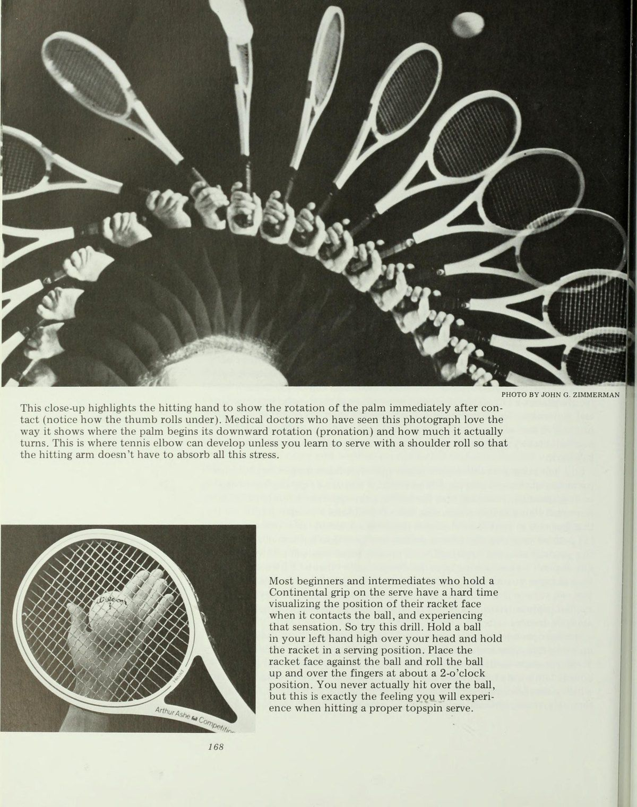
Phần IV: Trả Giao Bóng, Tâm Lý Học Thực Nghiệm & Chiến Thuật Đánh Đôi Đỉnh Cao
8. Chương 7 & 8: Nghệ Thuật Trả Giao Bóng & Chế Ngự Những Đối Thủ Khó Chịu
Trả giao bóng là cú đánh bị xem nhẹ nhất trong các buổi tập luyện phong trào, dù nó chiếm tới năm mươi phần trăm tổng số điểm số trên sân.
Để trả giao bóng hiệu quả trước những cú giao bóng sấm sét, bạn không được phép mở vợt ra sau rộng như một cú đánh cuối sân thông thường. Hãy sử dụng bộ chân nhún nhảy bước đệm (Split-Step) ngay khoảnh khắc đối thủ chạm bóng, khóa chặt cổ tay và mượn lực bóng đối phương để đẩy sâu về góc sân trống.
Bên cạnh đó, nỗi ám ảnh lớn nhất của các tay vợt phong trào thường không phải là những đối thủ đánh bóng mạnh mẽ, mà là những "dinker" hay "pusher" — những người chơi chỉ thích đẩy những đường bóng bổng, chậm và không có chút lực nào.
Sai lầm kinh điển của người chơi là nôn nóng muốn "nghiền nát" những quả bóng dink đó bằng cú vung hết tay từ cuối sân, dẫn đến chuỗi lỗi tự đánh hỏng thảm họa.
Bí quyết khoa học để đánh bại đối thủ phòng thủ lầy lội gồm hai chiến thuật:
Một là, chủ động kéo đối thủ lên lưới bằng một cú bỏ nhỏ hoặc bóng ngắn góc rộng, buộc họ phải rời khỏi hang ổ cuối sân và bộc lộ điểm yếu xử lý lưới non nớt.
Hai là, kiên nhẫn đánh bóng an toàn sâu giữa sân, tước bỏ mọi góc bẻ bóng của họ cho đến khi đối thủ buộc phải tung ra một đường bóng ngắn lơ lửng cho bạn lao vào dứt điểm.
9. Chương 9: Tâm Lý Học Thi Đấu — Giải Phóng Nỗi Sợ Hãi & Biên Độ Sai Số An Toàn
Là một nhà tâm lý học chuyên nghiệp, tôi nhận thấy rào cản lớn nhất ngăn cản một tay vợt thăng tiến không nằm ở cánh tay hay đôi chân, mà nằm ở giữa hai tai của họ.
Khi bị áp lực đè nặng ở những điểm số quyết định, hệ thống thần kinh giao cảm của người chơi sẽ kích hoạt phản ứng sợ hãi tự nhiên: các bó cơ bắp bị siết cứng ngắc, hơi thở nông và ngắn, nhịp tim tăng vọt. Kết quả là cú vung vợt bị co rút lại, bóng rúc lưới hoặc bay bổng ra ngoài.
Để dập tắt nỗi sợ hãi, bạn phải tuân thủ triệt để nguyên lý: "Biên Độ An Toàn Tuyệt Đối" (Margin for Error).
Đừng bao giờ nhắm bóng vào vạch sơn mép sân hay cách mép lưới vài centimet như trong các pha biểu diễn truyền hình. Quần vợt là trò chơi của xác suất thống kê. Khi bạn đánh bóng qua lưới cao hơn mép lưới từ một đến hai mét và nhắm sâu vào trong sân cách đường biên ít nhất một mét, bạn sẽ loại bỏ hoàn toàn tám mươi phần trăm các lỗi đánh hỏng sơ đẳng.
Hãy nở một nụ cười khoa học khi bước vào sân, hít một hơi thật sâu để thả lỏng đôi vai trước mỗi lượt bóng, và tập trung toàn bộ tâm trí vào quá trình thực hiện cú đánh thay vì ám ảnh bởi kết quả thắng thua.
10. Chương 10: Chiến Thuật Đánh Đôi Đỉnh Cao — Khái Niệm Bánh Kẹp Nỉ (The Fuzz Sandwich)
Đánh đôi không đơn thuần là hai người đứng chung một nửa sân, mà là một sinh thể hợp nhất chuyển động đồng điệu như thể hai người được nối với nhau bằng một sợi dây thừng căng chặt dài tám mét.
Khi một người di chuyển sang bên phải, người kia phải tự động di chuyển sang phải tương ứng để bịt kín mọi khoảng trống.
Quy tắc vàng bất di bất dịch trong đánh đôi hiện đại: "Bảo Vệ Khu Vực Giữa Sân" (Protect the Middle). Hơn bảy mươi phần trăm các pha bóng kết liễu thành công trong đánh đôi đều xuyên thẳng qua khoảng trống giữa hai người chơi.
Hãy phân chia rõ ràng: người chơi ở vị trí chéo sân hoặc người có cú thuận tay sẽ chịu trách nhiệm bao quát toàn bộ khu vực chữ T giữa sân.
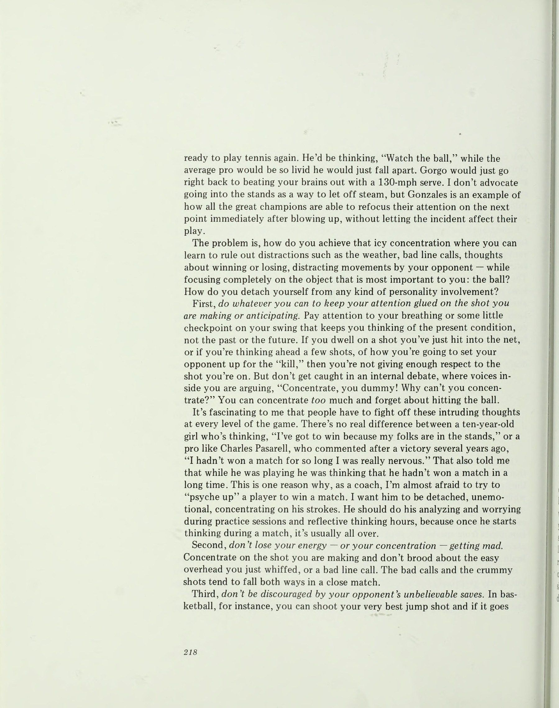
[English: Tactical Doubles Geometry: "The Fuzz Sandwich" & Center Seam Domination]
Khái niệm nổi tiếng mang thương hiệu Vic Braden — "Bánh Kẹp Nỉ" (The Fuzz Sandwich): khi đối thủ thực hiện một đường bóng lốp hớ hênh hoặc một cú vô-lê bổng yếu ớt, cả hai tay vợt đứng lưới của chúng ta sẽ đồng loạt áp sát, kẹp chặt quả bóng nỉ giữa hai mặt vợt tấn công và kết liễu điểm số xuống chân đối thủ với sự ăn ý tuyệt đối.
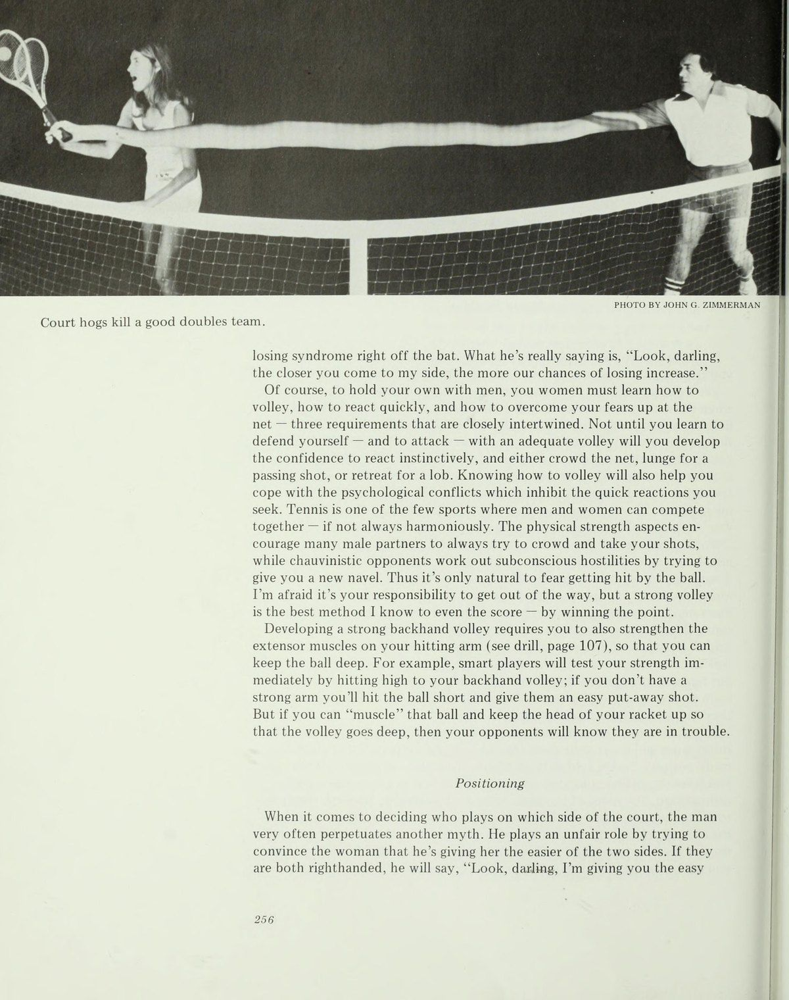